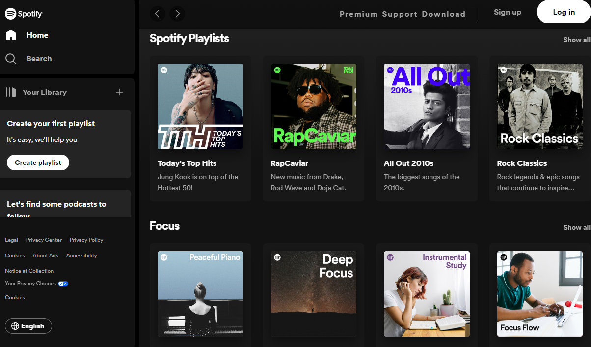
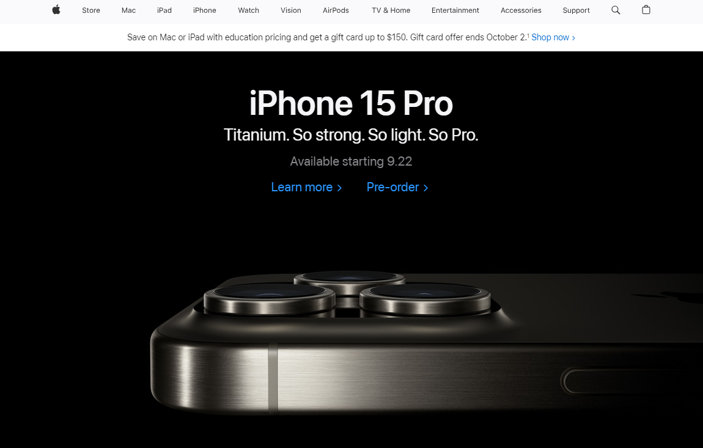
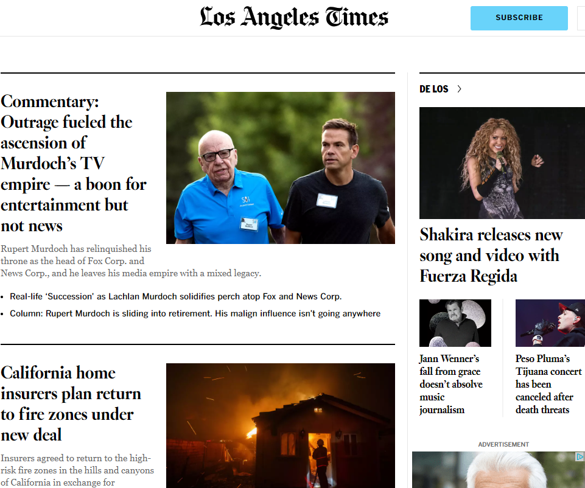

Hick's Law
Spotify

Hick’s Law is a psychological principle that describes the time it takes to make a decision as the number of options increases. This is important to design because it means that you can use Hick’s Law to guide any decision where there are many possible choices.
White Space and Clean Design
Apple

Space is one of the most important elements of design. It covers everything from the small spaces between text to the big empty areas on a webpage. Using white space can help you balance elements and layout your designs effectively.
Proximity
LA Times

The proximity principle in document design means that items placed nearby each other are related, while those that are far from each other are unrelated. Simply put, the proximity principle is the same, whether you’re a graphic designer or a business professional creating documents for work.